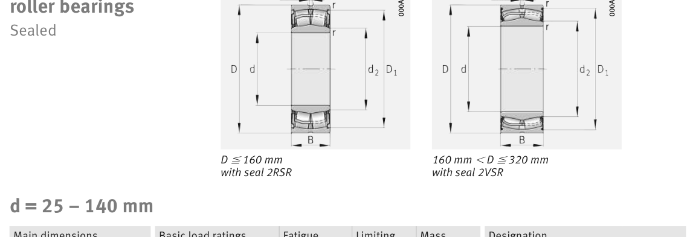

WS22208-E1-XL-2RSR is a FAG spherical roller bearing, bore 40 mm, O.D. 80 mm, width 28 mm. Dimensions, drawing, interchanges and price.

Scanned from the manufacturer catalogue page listing this part number. All part numbers printed on that table share the same drawing.
Blue = inner / outer ring, yellow = rolling element. Drawn to scale from this part's own dimensions for selection reference only - not a manufacturing or assembly drawing.
| Symbol | Dimension | mm | inch |
|---|---|---|---|
| d | Bore diameter | 40 | 1.5748 |
| D | Outside diameter | 80 | 3.1496 |
| B | Inner-ring / bearing width | 28 | 1.1024 |
| r | Chamfer (min) | 1.1 | 0.0433 |
Weights are given in kg. Load ratings are shown in both the original catalogue units and the converted value (1 N = 0.2248 lbf). Data is provided for selection reference only - confirm against the latest official catalogue before ordering.
| Bore d (mm) | 40 |
|---|---|
| Outside dia. D (mm) | 80 |
| Width B (mm) | 28 |
| Inner-ring shoulder dia. D1 (mm) | 72.6 |
| Basic dynamic load rating Cr (lbs) | 22706 |
|---|---|
| Basic static load rating Cor (lbs) | 20458 |
| Basic dynamic load rating Cr (N) | 101000 |
| Basic static load rating C0r (N) | 91000 |
| Fatigue limit load Cur (N) | 11800 |
| Factor e | 0.27 |
| Factor Y0 | 2.43 |
| Limiting speed nG (rpm) | 2,600 |
| Weight (kg) | 0.7 |
|---|
| Housing fillet r max (mm) | 1.1 |
|---|---|
| Shaft shoulder da (mm) | 45.9 |
| Housing shoulder Da (mm) | 73 |
| Housing fillet ra max (mm) | 1 |
| C / P | Equivalent load P (N) | L10 (106 rev) | L10h at 800 rpm |
|---|---|---|---|
| 4 | 25,250 | 102 | 2,117 |
| 6 | 16,833 | 392 | 8,177 |
| 8 | 12,625 | 1,024 | 21,333 |
| 10 | 10,100 | 2,154 | 44,884 |
| 15 | 6,733 | 8,323 | 173,406 |
Basic rating life per ISO 281: L10 = (C/P)10/3 with C = 101,000 N. Hours = L10 x 106 / (60n). Life-modification factors for lubrication, contamination and temperature (aISO) are not included.
| Brand | FAG |
|---|---|
| Source catalogue | FAG / Schaeffler Rolling Bearings HR 1 |
| Catalogue page | p.752 (dimensions) |
Load ratings in newtons, fatigue limit load Cur, limiting speed nG and reference speed nB.
| Designation | Brand | Type | d | D | B/T | Dyn. rating | kg |
|---|---|---|---|---|---|---|---|
| 20208-K-TVP-C3 | FAG | Spherical Roller | 40 | 80 | 18 | 49.5 kN | 0.38 |
| 20208-TVP | FAG | Spherical Roller | 40 | 80 | 18 | 49.5 kN | 0.386 |
| 20308-TVP | FAG | Spherical Roller | 40 | 90 | 23 | 76 kN | 0.671 |
| 21308-E1-XL | FAG | Spherical Roller | 40 | 90 | 23 | 109 kN | 0.749 |
| 21308-E1-XL-K | FAG | Spherical Roller | 40 | 90 | 23 | 109 kN | 0.749 |
| 22208-E1-XL | FAG | Spherical Roller | 40 | 80 | 23 | 101 kN | 0.528 |
| 22208-E1-XL-K | FAG | Spherical Roller | 40 | 80 | 23 | 101 kN | 0.528 |
| 22308-E1-XL | FAG | Spherical Roller | 40 | 90 | 33 | 156 kN | 1.05 |
Send us the quantity you need and we will come back with price and lead time, normally within 24 hours. Equivalent parts from other brands can be quoted at the same time.